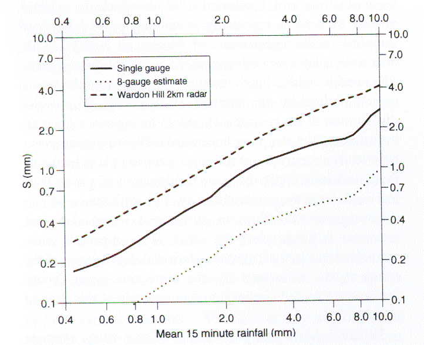
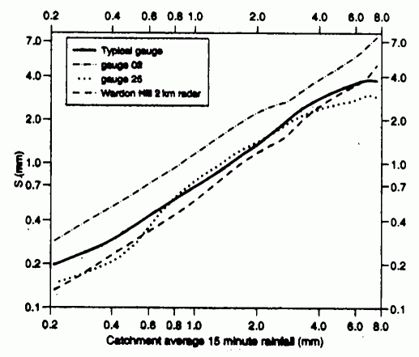
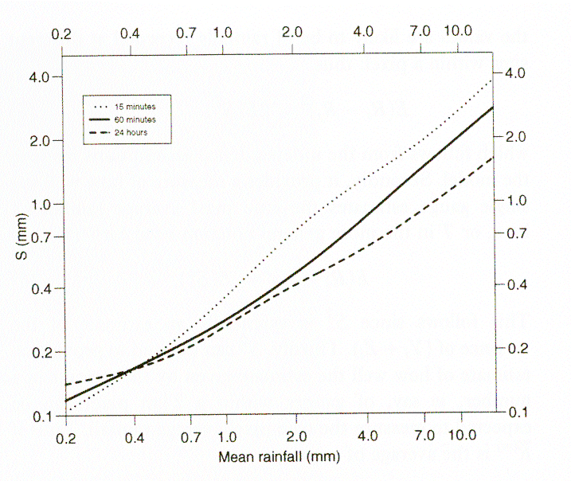

Martin Goeber, Met Office
Why?
The theoretical limit of the scales represented in a numerical model is 2*dx, where dx is the grid size. In practise the "real resolution" of the model is at least twice as large depending on model formulation (especially parametrisations), orography, weather situation etc. and thus the model output should be viewed as an areal mean and not as a point value.
The gradients of the fields are small on scales of order(dx) for many variables and weather situations and thus a point observation can be seen as representative for an area of dx*dx.
There are two classes of exceptions: a) observations in areas of high variabililty of geographical factors (orography, land/sea/ice, etc.) and b) variables like precipitation, clouds, visibility etc..
Let's have a closer look at the variability within the latter class. Wood et al. (2000) report from a rainfall measurement campaign in England using 49 tipping-bucket gauges in a 135 km2 catchment, including a super-dense network of 8 gauges in 4 km2, and a 2 km resolution radar.

Figure 1: Comparison of the standard errors of estimation for 15 minute rainfall for a single, gauge, for 8 gauges in the square and for radar estimates (from Wood et al., 2000).
Fig. 1 shows that the errors at a point are about twice as large for a single gauge and four times as large for the radar compared to an areal estimate based on a network of gauges. On the other hand, the mean over the catchment (which here was about as big as a typical mesoscale model grid box) was best represented by radar measurements for all but the heaviest rainfall (Fig. 2).

Figure 2: Standard error of the catchment rainfall estimate obtained from a single gauge or from radar as a function of total rainfall. Gauge 02 is a gauge on the edge and gauge 25 at the centre of the catchment and 'typical' is the average gauge (from Wood et al., 2000).
Thus one should use observations upscaled to the model resolution or observations which already measure an areal quantity.
The accuracy of the accumulation estimation increases with accumulation time, specifically for heavier rainfall (Fig. 3).

Figure 3 : Standard error of rainfall estimate from a single gauge as a function of total rainfall over the catchment for accumulation periods of 15 minutes, 60 minutes, and 24 hours (from Wood et al., 2000).
How?
There are lots of methods available to upscale observations, from simple averages, distance weighted-averages, error (observational and representativity) weighted methods (e.g. Daley, 1991), to multi-variate statistical methods (e.g., Von Storch, 1995; Pardo-Iguzquiza, 1998).
Typical results
As an example, Cherubini et al. (2002) verified precipitation forecasts against either a set of standard low resolution gauge observations from the Global Telecommunication System (GTS) or against a set of upscaled high-resolution observations from the Mesoscale Alpine Program (MAP). They showed that the over-estimation of most rainfall amounts is reduced when using upscaled observations instead of point measurements. The accuracy of their forecasts was increased as well using this "fairer" comparison.
Recommendation
When possible, one should use rainfall estimates representative of areal means similar to what the model simulates.
But there are all sorts of problems which make it difficult to get up-scaled estimates based on high-resolution observations (availability of high-resolution data, longer-term inconsistencies in observational network, etc.). In this case it helps to remember that even rainfall fields are not white noise but substantially correlated in space and time. Thus, when looking at longer term statistics (e.g., monthly scores of 12 hour totals) instantenous errors cancel out to a good degree (for example, Goeber and Milton (2002) show that verification results do not vary dramatically between verifying at model resolution and 3*model resolution). But what one should not do with low-resolution networks is to look at single cases or compare verification results obtained with different data sets.
There is even some "advantage" of a low resolution (but well distributed!) network, since then observations might be spatially independent and thus each pair of observation-forecast does actually give new information, whereas highly correlated observations or forecasts do not really give a lot of independent information. For instance, a model forecast might comprise 104 data points but there are only three rain areas at that time. Thus the real number of degrees of freedom of the data set is certainly not 104 but possibly of order(10-100), and thus the confidence one can have in the results changes dramatically. Hamill (1999) uses re-sampling methods to estimate confidence intervals for precipitation forecasts. Ebert and McBride (2000) show the advantage of using an object oriented verification method in these cases.
References:
Cherubini, T., Ghelli, A. and Lalaurette, F., 2002: Verification of precipitation forecasts over the Alpine region using a high-density observing network. Wea. Forecasting, 17, 238-249.
Daley, R. (1991): Atmospheric data analysis. Cambridge, Cambridge University Press, 457 pp.
Ebert, E.E. and McBride, J.L., (2000): Verification of precipitation in weather systems: determination of systematic errors. J. Hydrol., 239, 179-202.
Goeber, M. and Milton, S., 2002: Verifying precipitation events. NWP Gazette, March 2002, Met Office, 9-11. Also available at: www.metoffice.com/research/nwp/publications/nwp_gazette/mar02/verif.html
Hamill, T.M., 1999: Hypothesis tests for evaluating numerical precipitation forecasts. Wea. Forecasting, 14, 155-167.
Pardo-Iguzquiza,E. (1998): Comparison of geostatistical methods for the estimation of the areal average climtatological rainfall mean using data on precipitation and topography. Int.J. Climatol., 18, 1031-1047.
Von Storch, H. (1995): Inconsistencies at the interface of climate impact studies and global climate research. Meteorol. Zeitschrift, N. F, 4, 72-80.
Wood, S.J., Jones, D.A. and Morre, R.J. (2000): Accuracy of rainfall measurement for scales of hydrological interest. Hydrol. Earth Syst., 4, 531-543.